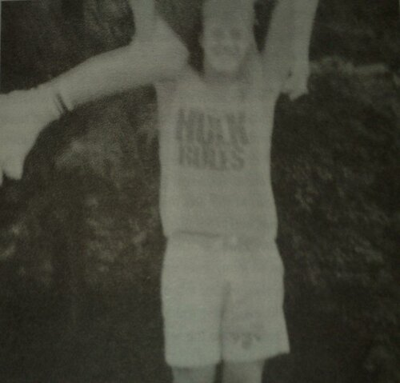
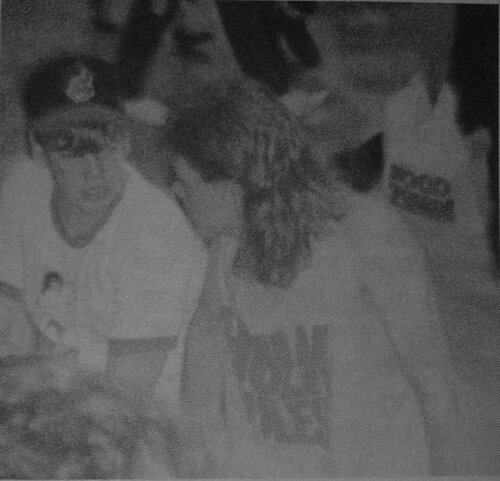
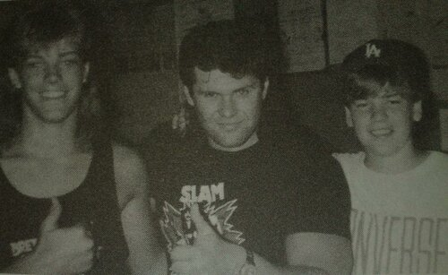

Глава 6
Перевод Тани (Dark Bird) для VSplanet.net
Рестлинг вцепился в меня и его хватка была крепче, чем кроссфейс Криса Бенуа. Я сидел в старом кресле-качалке, мои ноги были возле обогревателя, а мысли были полностью поглощены Халком Хоганом. Он заставил меня чувствовать, что я мог бы достичь всего, что задумал. Это так круто звучит, как слова Курта Энгла: «Это чертовски верно!» Я сидел, приклеившись к экрану. Я смотрел все шоу: Superstars, Wrestling Challenge, Wrestling Spotlight и Maple Leaf Wrestling, которую представлял ведущий Билли Ред Лайонс и его знаменитый лозунг «Не смейте пропустить это». Поверь, Билли Ред (царство ему небесное), я не упустил это. Мой аппетит к рестлингу был сильнее, чем аппетит Биг Шоу при виде шведского стола. Раз в месяц был Saturday Night’s Main Event. Мы с мамой садились у телевизора с картофельными чипсами и попкорном, и я моментально улетал в свой собственный мир. Я не слышал никаких маминых вопросов. Мои глаза не видели ничего другого. Представьте себе вампира сосущего весь рестлинг, что есть на телевидении, пока он не был обескровлен. Я был совсем как чертов Граф Дракула.

Здесь я поднимаю Джея (это его ноги болтаются слева).
International Wrestling из Монреаля представляли Рик Мартел, Том Зенк, Садист Стив ДиСальво, Эдди «Мозг» Кречман, его сын «Красавчик» Флойд Кречман, «Мистер Вечное Движение» (вполне возможно, худшее прозвище в рестлинге вообще) и человек, который когда-то помог моей рестлинг-карьере сдвинуться с мертвой точки, Сладкий Папочка Сики (подробнее о нем позже).
All Star Wrestling на канале BC был вторым после World Wrestling Federation и серьезно ей уступал. На самом деле, он был ужасен и лишён новизны, но я всё ещё смотрел его. У них был один настоящий неограненный алмаз с соответствующим именем «Алмаз» Тимоти Флауэрс. Флауэрс всегда обуздывал Фрога (Лягушку) (имя может быть хуже, чем Мистер Вечное Движение, и да, Лягушка выглядел примерно так же устрашающе, как звучит его имя).
А потом появился Stampede Wrestling из Калгари, который меня полностью захватил. Это было похоже на приближение ракеты на экране рестлинг-радара. Брет Харт, Дэйви Бой Смит, Динамит-Кид и Бэд Ньюс Ален, — все в начале своей карьеры. Я с благоговением смотрел, как в легендарном Stampede у Стю Харта начинали свои карьеры Оуэн Харт, Крис Бенуа, Джушин Лигер, Хироши Хэйс и Брайан Пиллман. Это был совершенно иной рестлинг — гибридный, развившийся под влиянием японского и британского стилей. У них были матчи с лестницами! Что? Это правда, Брет против Бэд Ньюса в матче с лестницами до того, как такие бои стали знаменитыми (или заслужившими дурную славу — все зависит от вашей точки зрения). Для меня это было неслыханно. Я тогда даже не представлял, какую роль в моем будущем сыграют лестницы. Ведущим Stampede Wrestling был Эд Уэлен. В конце каждого шоу он всегда произносил: «In the meantime, and in between time, that’s it, another edition of Stampede Wrestling. Bye bye now.» Я повторял эти слова за ним каждую неделю. У Эда было огромное количество фирменных фраз. Например, «The ol’ malfunction at the junction», которую он использовал при любом серьезном споте.
Каждую неделю Эд также вел Pro Wrestling Plus. Эта программа демонстрировала рестлинг со всего мира. Рестлеры из разных территорий NWA — континент, Средний юг, Пуэрто-Рико, Средняя Атлантика — все они были представлены на этом шоу. Парни, о которых я мог только читать на страницах Pro Wrestling Illustrated, как Рик Флэр, Джерри Лоулер, Доктор Том Причард, Остин Айдол, фон Эрики, Брузер Броди и Карлос Колон засветились на Pro Wrestling Plus. Я не мог насытиться, но они показывали только тридцатисекундные клипы матчей. Мы не могли позволить себе видеомагнитофон, так что в моей голове остались лишь мимолётные образы и картинки.
Примерно в это же время TSN (Total Sports Network) получил AWA Wrestling и запустил трансляции в Канаде. Рик Мартел был их чемпионом мира. Там выступали такие парни как Стэн Хансен, Ларри «Топор» Хенниг, его сын Курт Хенниг, Ник Боквинкель, Лэрри Збышко и Полночные Рокеры — Шон Майклз и Марти Джаннетти. Даже Халк Хоган работал там прежде, пока не предпочел яркие огни Нью Йорка и World Wrestling Federation.
На протяжении всего этого рестлинг-фанатизма, моя мама сидела рядом со мной. Она успокаивала меня, когда Кинг Конг Банди нападал на Хогана, Рэнди Сэвиджа или Рикки Стимбоата. Мы покупали все новые фигурки рестлеров (классические резиновые), и когда я говорил, что хочу быть рестлером, она всегда отвечала как Тони Тигр «Grreeaat!» («Замечательно!») Она, наверное, не хотела спорить с маленьким мной. Моя страсть к рестлингу была заразной, и я думаю, что она в тайне наслаждалась им так же, как и я.
Однажды, мама и дядя Рэнди удивили меня, купив билеты на шоу WWF в Maple Leaf Gardens. Более того, места были в четвертом ряду от ринга! Я не знаю, как они сделали это, но они этого добились. Мы пошли туда — я, мама, Рэнди и моя будущая тетя Сэнди. Я никогда не забуду нервную дрожь, когда я оказался рядом с тем старым внушительным зданием. Нам каким-то образом повезло, и мы оказались у входа, через который рестлеры заходили в здание. Они все проходили мимо меня, эти огромные мускулистые гиганты — «Зверь» Джордж Стил, Тито Сантана, Хилбилли Джим и Кинг-Конг Банди. Я был в восторге.

В Maple Leaf Gardens с Джеем. Смотрим на этих «Питонов».
В Maple Leaf Gardens была знаменитая черная рампа, которая вела к рингу. Раньше я только по ТВ видел тех, кто проходил ею на шоу Maple Leaf Wrestling, а теперь я был там. Первый матч — мой первый матч — был Рене Гуле против Тони «Пушечное Ядро» Паризи. Признаюсь, ни один из парней по-настоящему не захватывал мое воображение. Но к тому времени, когда Паризи сделал своё «Пушечное Ядро», я был пленён на всю жизнь. Мэйн-ивентом в тот день был бой Джесси Вентура и «МачоМэна» Рэнди Сэвиджа против Тито Сантаны и Мусорного Пса. Я, конечно, болел за всех фейсов, хотя в то время для меня они были просто хорошие ребята. Я воспринимал их как защитников того, что правильно. Рестлинг в то время был двуцветным. Не существовало оттенков серого, он был контрастен и сух. С этим я ничего не мог поделать, но как, например, в случае с Вентурой и МачоМэном, я просто не признавал этого.
Другое утверждение, которого я никогда не принимал, был тезис, что исходы всех боев в рестлинге были предопределены, или, что еще хуже, страшное слово (барабанная дробь, пожалуйста) подделка! Мог ли я знать, что позже узнаю из первых рук, что рестлинг действительно был предопределен. Хотя я никогда не признаю, что это подделка (металлическая пластина в моей шее — вполне весомый аргумент).
Оказалось, что я не единственный, кто любил рестлинг. Близилась WrestleMania, был взрыв популярности. Так получилось, что примерно в это же время в соседнем городем (на самом деле он больше похож на деревушку) Гранд-Валли еще один парень по имени Джейсон Ресо (на один месяц младше меня, будем точны) также открыл для себя рестлинг. Этот Джейсон станет в конечном итоге моим «братом» Кристианом (жаль разочаровывать, мы на самом деле не братья). Сейчас мы доберемся до него.
Итак, этот парень Джейсон Ресо переехал в Оранджвилл и начал посещать школу Принцессы Елизаветы. Поначалу он был окружен таинственным ореолом новичка. К тому же он был фанатом ниндзя и носил огромные напульсники, но я был готов смотреть на это сквозь пальцы. Ниндзя и в подметки не годились рестлерам, но все равно, на мой взгляд, чертовски хорошо дрались. Несмотря на ниндзя, для Джея рестлинг был тоже номером один. Он обнаружил рестлинг за год до того, когда сломал руку, и ему ничем было заняться, кроме как смотреть телевизор. Я уверен, что в день нашей встречи боги рестлинга вовсю улыбались. В конце концов мы стали неразлучны, хотя в школе мы были изгоями. Почему-то только нас двоих не приглашали на вечеринки. Вероятно потому, что мы были (и продолжаем быть) огромными ботанами. Нас это не волновало, у нас был рестлинг.
Даже несмотря на мою одержимость рестлингом, я нашел время для первого настоящего поцелуя. Я встречался с рыженькой девочкой по имени Синди Крокфорд. Синди родилась в тот же день, что и я, в той же больнице. Я был единственным мальчиком в родильном отделении в тот день. Вы можете подумать, это было знаком того, что наступило сексуальное дозревание. Это не так. Во всяком случае, я был в 6-м классе и повстречал Синди. Я проводил ее домой и вдруг понял, что она смотрит на меня, ожидая поцелуя. Ладно, поехали. Я закрыл глаза и сделал решающий шаг с закрытым ртом, ожидая лёгкого поцелуя на губах. Синди была, очевидно, немного более опытной в вещах касающихся поцелуев, потому что ее рот был широко раскрыт. Я не понял намека и мой первый поцелуй чуть было не был безнадежно испорчен: это было даже хуже, чем матч Джонатана Коучмэна. Но в отличие от Коуча, я успел спасти положение.
Хотя у меня была подруга, Джей и я все еще были весьма замкнуты. Однажды, во время нашего отшельничества, будучи в пиковой фазе бунтарей-без-единой-причины, мы решили провести всю ночь без сна. Ах да, мы собирались доказать, как круто гулять всю ночь, полагая, что у нас потом будет отличная история, которую мы могли бы рассказывать. Джей сказал своим родителям, что он заночует у меня, а я сказал маме, что останусь у Джея. Так, в одиннадцать в ту ночь, мы пошли бродить у Католической школы Св. Андрея… одни! Реально круто. Конечно, нам нечем было заняться, но в ту ночь неожиданно случилась сильная гроза. Но мы были действительно круты. Мы тащились через весь город, но потом все же сдались. Мы нашли картонную коробку, перетащили ее в переулок и уснули под ней. Хотите верьте, хотите нет, стучавший в коробку дождь отлично меня убаюкал. На следующее утро около семи утра, мы проснулись и пошли в дом Джея, где спрятались в гараже, пока его родители не встали. Нам казалось, что это было самое подходящее время, в которое он бы вернулся от меня. Как я сказал, мы были бунтарями без единой на то причины. Хотя и не такими крутыми как Фонзарелли. (прим.перев. — Артур Фонзарелли — герой сериала «Счастливые дни» (1974–1984). Фонз — стало нарицательным именем крутого парня.)
Очень редко небольшие независимые рестлинг шоу заезжали (на самом деле это больше похоже на «захрамывали») на Арену Оранджвилля. Джей и я втянулись в рестлинг-бизнес в самом раннем возрасте. Как-то мы встретились с местным промоутером и начали помогать. Мы развешивали плакаты, расставляли стулья и, наконец, помогали ставить ринг! Промоутер даже разрешал нам войти и повертеться вокруг ринга некоторое время (на том ринге, в конечном счете, состоялся мой первый матч). Джей воспользовался этой возможностью, чтобы подняться на канаты и наброситься на своего брата Джоша, накрывая его лучшим кроссбади, который я только когда-либо видел до сих пор. На этом наше веселье закончилось. Особенно для Джоша. Он потом еще неделю ощущал последствия этого прыжка. Однажды, мы рискнули и запрыгнули в ринг во время перерыва. Теперь, я никогда не советовал бы делать это во время шоу WWE, потому что секьюрити или один из нас может оторвать вам голову, но в ту ночь мы с Джеем воспользовались моментом и проскользнули на ринг. Очевидно, местных секьюрити не волновало, что Джей сбил меня клоузлайном, и я успел ударить его эксхендлом, как Мачо Мэн, правда без прыжка, да и не таким изящным. Затем мы унеслись из ринга, как Дорожный Бегун и Быстрый Гонсалес (прим. перев. — мультяшные герои, славящиеся своей быстротой: птичка, постоянно убегающая от Хитрого Койота, и «самая быстрая мышь во всей Мексике»), или еще лучше, как Супермен и Флэш, но, прежде чем мы это сделали, случилась магическая вещь. Мы на самом деле получили реакцию. Эту реакцию мы, конечно, потом раскрутили до эпических масштабов — достойных посоперничать с самомнением нашего любимого Халкстера. Достаточно сказать, что клоп рестлинга никогда и никого не кусал глубже.

На Orangeville Arena с Полом Даймондом и Джеем.
На этих небольших шоу были Сладкий Папочка Сики (еще раз), Тони Атлас, Вик Стимбоат, Абдула Мясник, Трэйси Смазерс, Пол Даймонд, Крис Кольт, Cream Team (ещё одно брутальнейшее имя), Крис Эванс и человек, который напугал меня до полусмерти и заставил убежать с моего места, как маленькую школьницу — настоящий Шейх. Было здорово быть так близко к действию, но вместе с тем какая досада, что надо возвращаться к скучной школе в понедельник.